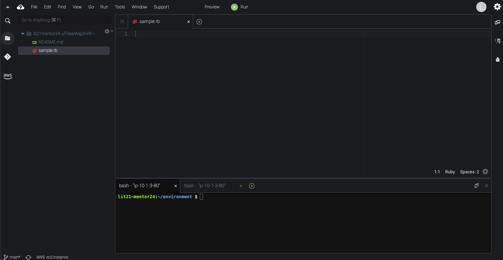

このコードラボでは、実際に Cloud9 を使用しながら Ruby について学んでいきます。
Cloud9 で実際にコードを入力して手を動かしながら、進めていきましょう！
まずは、Cloud9 を開き、enviromentのフォルダの直下に、sample.rbという名前のファイルを作成しましょう。
ファイルは、左側のフォルダを右クリックして出てくる New File をクリックするか、左上のfileをクリックして出てくる New File をクリックすると作成できます。
下の写真のようになっていれば OK です。

この Codelab を見ていくと、このようなコードがあります。
# これは、コメントです。メモなど好きなことを書くことができます。
コメントは人間がわかりやすいように複雑な処理や一見わかりにくい処理に対して書くメモ書きです。 # シャープを書くことで右側はすべてコメントになります。
sample.rbに下のコードを書いてみましょう。
puts "hello world"
下のコマンドでファイルを実行しましょう。Ruby ファイルは、ruby ファイル名で実行することができます。
ruby sample.rb
下のようにコンソールに出力されたら OK です。
hello world
標準出力は、コンソールに情報を表示することができます。
文字列（変数を使わない場合）をコンソールに出力したい場合
puts "hoge"
hoge
変数の内容をコンソールに出力したい場合
hoge = "hello"
puts hoge
hello
変数を使う場合と使わない場合の 2 つのパターンで実際にコードを書いて出力させましょう。
Cloud9を使って開発するよ
次に、変数について詳しく学んでいきましょう。
まず変数とは、データに名前をつけて区別できるようにする仕組みで、Ruby では以下のように定義します。また、Ruby は動的型付け言語なので、型宣言は不要です。
キーワード = 初期値
instructor = "kaikai"
puts instructor
下のように出力されるか確認してみましょう。
kaikai
Ruby は動的型付け言語なので型宣言は不要だと説明しました。動的型付け言語に対して、静的型付け言語も存在します。
iOS アプリ開発でよく用いられる Swift の言語は静的型付け言語です。Swift では変数の定義を次のように行います。
var instructor : String = "kaikai"
このように、静的型付け言語では変数の定義ごとに型を指定する必要があります。
ここでは、文字列について学んでいきます。
Ruby の文字列では、""（ダブルクォート）と''（シングルウォート）のどちらでも文字列を宣言することができ、+演算子で文字列を結合することができます。
instructor = 'kaikai'
puts 'hello ' + instructor + '!'
hello kaikai!
""（ダブルクォート）では、文字列の内部で式展開を行うことができます。
instructor = 'kaikai'
puts "hello #{instructor}!"
hello kaikai!
ここでは、数値について学んでいきます。
Ruby では、数値を数のみを扱える整数(integer)か小数点も扱える浮動小数点数(Float)のどちらかで数値を扱っていきます。
正の整数・負の整数・ゼロを表すことができます。
number1 = 10 # 正の整数
number2 = -10 # 負の整数
number3 = 0 # ゼロ
p number1
p number2
p number3
10
-10
0
正の浮動小数点数・負の浮動小数点数・ゼロを表すことができます。
number1 = 12.3 # 正の浮動小数点数
number2 = -12.3 # 負の浮動小数点数
number3 = 0.0 # ゼロ
p number1
p number2
p number3
12.3
-12.3
0.0
数値同士では、+を用いて演算を行うことができます。
puts 10 + 20
30
もし、一方が小数だと自動で浮動小数点数(Float)に型変換が行われ、演算が行われます。
number = 10 + 10.1
puts number
puts number.integer?
20.1
false
※integer?は、数値が整数(integer)かを調べるメソッドで、値が浮動小数点数ならばfalseと返します。
Ruby では、数値用に便利なメソッドが用意されています。ここでは、一例を紹介しますが、他にもあるので自分で調べてみましょう。
# 小数点以下を四捨五入
puts 3.14.round
# -> 3
puts 3.34.round
# -> 4
# 小数点以下を切り上げ
puts 3.14.ceil
# -> 4
puts -3.14.ceil
# -3
# 小数点以下を切り捨て
puts 3.14.floor
# -> 3
puts -3.14.floor
# -> -4
ここでは、配列について学んでいきます。
まず、Ruby では以下のように宣言を行います。
animals = ["dog", "cat", "mouse"]
上の配列では、3 つの要素をもっています。「dog」「cat」「mouse」の 3 つの文字列オブジェクトを管理しています。 複数の要素から 1 つを特定できるように先頭から順番に番号が割り当てられています。この番号のことをインデックスと呼んでいます。先頭から「0」「1」「2」と0から順に割り当てられています。
特定の要素を取り出すには、以下の書き方を使用します。
配列オブジェクト[インデックス]
例えば、「cat」を取り出したい場合は以下のように書くことができます。
animals = ["dog", "cat", "mouse"]
puts animals[1]
cat
要素の追加は、pushもしくは<<を使用して実行することができます。
animals = ["dog", "cat", "mouse"]
animals.push("rabbit")
puts animals
animals = ["dog", "cat", "mouse"]
animals << "rabbit"
puts animals
["dog", "cat", "mouse", "rabbit"]
ここでは、ハッシュについて学んでいきます。
ハッシュは、任意の種類のオブジェクト（キー）から任意の種類のオブジェクト（値）への関連付けを行うことができます。
キーには:文字列の形をした シンボル と呼ばれるものを用いるのが一般的です。
ハッシュは以下の方法で書くことができます。
{ キー => 値 }
{ キー: 値 }
{ :キー => 値 }
{ "キー": 値 }
{ :"キー" => 値 }
例えば、green というキーに「緑」という値・red というキーに「赤」という値を関連づけを行う場合、以下のように書くことができます。
{ green: "緑", red: "赤" }
キーがシンボルであるとき、ハッシュ名[:キー]で取り出すことができます。
colors = { green: "緑", red: "赤" }
puts colors[:green]
緑
また、存在しないキーを指定すると nil が帰ってきます。
colors = { green: "緑", red: "赤"}
puts colors[:blue]
nil
追加は、以下のような書くことができます。
ハッシュ名[:キー] = 値
以下の例では、青を追加しています。
colors = { green: "緑", red: "赤"}
colors[:blue] = "青"
puts colors
{ green: "緑", red: "赤", blue: "青" }
削除は、以下のような書くことができます。
ハッシュ名.delete(:キー)
以下の例では、赤を削除しています。
colors = { green: "緑", red: "赤"}
colors.delete(:red)
puts colors
{ green: "緑", blue: "青" }
ここでは、型変換について学んでいきます。
まずは、sample.rbに以下のコードを入力してみましょう。
number = 10
text = "Hello"
puts number + text # TypeError
このコードでは、Int 型であるnumberとtextという String 型の情報を足そうとしているため TypeError になります。 しかし、Ruby では、.to_sというメソッドを使用してあげることで、Int 型の変数を String 型に変換することができるので、TypeError を回避することができます。
number = 10
text = "Hello"
puts number.to_s + text # TypeErrorを回避
10Hello
ここでは、一例を紹介しますが、他にもあるので自分で調べてみましょう。
# 文字列から整数に型変換（数値に変換できない場合、0となる）
"string".to_i
# 文字列から小数に型変換（数値に変換できない場合、0となる）
"string".to_f
# 整数から小数に型変換
10.to_f
# 数値から文字列に型変換
10.to_s
それでは、以下のコードを実行して TypeError を発生させてみましょう。
number1 = 10
number2 = 3.14
text1 = "20"
text2 = "Hello World"
puts number1 + text1
puts number1 + text2
puts number2 + text1
続いて、上で定義した変数を用いて、以下の出力になるように自分でプログラムを変えてみましょう。
30
10Hello World
23.14
ここでは、繰り返し処理について学んでいきます。
Ruby における For ループは、以下のフォーマットで使用します。
for 変数 in オブジェクト do
実行する処理1
実行する処理2
end
オブジェクトには、配列やレンジなどを指定することができます。 レンジとは、数値や文字列の範囲を示すことができるものです。
1..5 1 以上 5 以下1...5 1 以上 5 未満という形で使用することができます。
例えば、1 から 4 までの数字を出力するプログラムを以下のように書くことができます。
for i in 1..4 do
puts i
end
1
2
3
4
Ruby における each ループは、以下のフォーマットで使用します。
オブジェクト.each do |変数|
実行する処理1
実行する処理2
end
例えば、配列の中身を取り出すプログラムでは以下のようになります。
animals = ["dog", "cat", "mouse"]
animals.each do |animal|
puts animal
end
dog
cat
mouse
Ruby における while ループは、以下のフォーマットで使用します。
while 条件式 do
実行する処理1
実行する処理2
end
例えば、1 から 4 までの数字を出力するプログラムを以下のように書くことができます。
x = 1
while x <= 4 do
puts x
x = x + 1
end
1
2
3
4
for・each・while のそれぞれを使って、配列の中身を順番に取り出すプログラムを書いてみましょう！
# 配列のサンプル
animals = ["dog", "cat", "mouse"]
また、「 1 から 100 までの整数の和」を繰り返し処理を用いて求めてみましょう。
次のような結果が出力されたら正解です。
5050
ここでは、条件分岐について学んでいきます。
Ruby では、ifを以下のように記述します。
if 条件式
条件式がtrueの時の処理
else
条件式がfalseの時の処理
end
また if は、連続して使用することができるので、以下のコードを実行すると
x = 4
if x == 0
puts "zero"
elsif x % 2 == 0
puts "even"
else
puts "odd"
end
このようになります。
even
Ruby では、unlessを以下のように記述します。
unless 条件式
条件式が偽の時に実行する処理
else
条件式が真の時に実行する処理
end
elsifは、unless 文にはありません。そのため、elsif を使用したい場合はif文を使用しましょう。
x = 4
unless x == 0
puts "non zero"
else
puts "zero"
end
non zero
ここでは、クラスとインスタンスについて学んでいきます。
クラスは、変数とメソッドが入る設計図のようなものです。インスタンスは、クラスを元に作成された実体です。
例えば、コースというクラスを作成した場合、WebサービスプログラミングコースやWebデザインコースというインスタンスを作成することができます。
クラスの内部には、変数とメソッドを定義することができます。
例えば、コースというクラスの場合、以下のように設計することができます。
# Class Course
変数
- name(コース名)
- tool（使用ツール）
メソッド
- application（コースへの申し込み）
- teach（コースを教えることができる）
これを定義するには、Ruby では以下のように記述します。
class Course
def initialize(name, tool)
@name = name
@tool = tool
end
def application(student)
# コースへの申し込みの処理
end
def teach(mentor)
# 教えることができる人の処理
end
end
ここで、@nameは生成されたインスタンスに定義されるインスタンス変数と呼ばれるものです。
インスタンス変数の定義には、変数名の最初に@を付けます。
インスタンスを生成するときは、クラス名.new()でinitializeメソッドを呼び出します。この時に、引数に定義した name と tool をインスタンスに定義することができます。
例えば、name にWebサービスプログラミングコース・tool にCloud9を定義したい時は以下のように記述します。
webs = Course.new("Webサービスプログラミングコース", "Cloud9")
インスタンスに定義された変数は、インスタンス名.変数で取り出すことができます。
例えば、webs というインスタンスの name を取り出したい場合は、以下のように記述します。
puts webs.name
Webサービスプログラミングコース
インスタンスに定義されたメソッドは、変数と同様にインスタンス.メソッド名(引数)で実行することができます。
例えば、application の中身も定義して実行してみましょう。
class Course
略
def application(student)
puts "#{student}は#{@name}に申し込みました"
end
略
end
webs = Course.new("Webサービスプログラミングコース", "Cloud9")
puts webs.application("がっしー")
がっしーはWebサービスプログラミングコースに申し込みました
上と同様に Course クラスを作成し、iPhone コースの例を作ってみましょう。出力が以下になるようにコードを書いてみましょう。
# コース名の出力
iPhoneアプリプログラミングコース
# ツール名の出力
Xcode
# applicationメソッドの実行結果
ビルソンはiPhoneアプリプログラミングコースに申し込みました。
# teachメソッドの実行結果
がっしーはiPhoneアプリプログラミングコースを教えることができます。
ここでは、Ruby の命名規則について学んでいきます。
命名規則 | 例 | |
クラス | UpperCamelCase | WebService |
モジュール | UpperCamelCase | WebService |
メソッド | snake_case | web_service |
変数 | snake_case | web_service |
定数 | SNAKE_WITH_UPPERCASE | WEB_SERVICE |
Ruby は、すべてがオブジェクトです。そのため、Ruby は究極のオブジェクト指向な言語です！
例えば、String クラスのインスタンスの場合は以下のような仕組みになっています。
# Stringクラスのインスタンス
instructor = 'chanrika'
# Stringクラスのメソッドが使える -> 戻り値はTrueクラスのインスタンス
puts instructor.include?('a')
# Stringクラスのメソッドが使える -> 戻り値はIntegerクラスのインスタンス
puts instructor.to_i
true
0
同様に、Array クラスのメソッドは以下のような仕組みになっています。
# Arrayクラスのインスタンス
animals = ["dog", "cat", "mouse"]
# Arrayクラスのメソッドが使える
animals.each do |animal|
# 戻り値はStringクラスのインスタンス
puts animal
end
dog
cat
mouse
標準入力と標準出力を使用して、じゃんけんアプリをつくりましょう。
出せる手 | 入力・出力上での表現 |
グー | 0 |
チョキ | 1 |
パー | 2 |
例1: プレイヤーがグーを選び、コンピューターがランダムでチョキを選んだことで、プレイヤーが勝った場合
## 入力
0
## 出力
0 0 1
例2: プレイヤーがチョキを選び、コンピューターがランダムでグーを選んだことで、プレイヤーが負けた場合
## 入力
1
## 出力
1 1 0
前の Challenge で作ったじゃんけんアプリを改良して、あっち向いてホイアプリをつくりましょう。
じゃんけん部分は、上の「Challenge: じゃんけんアプリを作ろう」の章を見てください。
あっち向いてホイは、以下の入力と出力を行います。
発展として、13 課で扱ったオブジェクト指向について詳しく掘り下げます。
オブジェクト指向(OOP)とは、あらゆる対象をオブジェクトとして扱い、そのオブジェクト間の相互作用として全体を構成させる、プログラミング手法の一つです。
13 課で学んだように、Rubyにはクラスとインスタンスがあり、そこには変数とメソッドが定義されます。
ここでは、クラスとインスタンスには一見関係なさそうな、変数に文字列を代入する例を見てみましょう。
text = "hoge"
puts text.class
String
.classとは、インスタンスのクラスを返すメソッドを表します。
結果はStringと出たように、変数textはStringクラスに属するインスタンスであることがわかります。
したがって、Stringクラスではメソッドである.classが使えることがわかります。
このように、Rubyを始めとするオブジェクト指向型言語では、あらゆる対象をメソッドと定義が用意されたモノ、すなわちオブジェクトとして扱い、その組み合わせによってプログラムを構成する手法を取ります。
※ 実際には、.classメソッドはObjectクラスに定義されており、String クラス は Object クラス を継承しています。